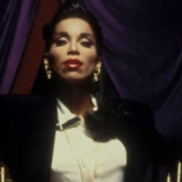
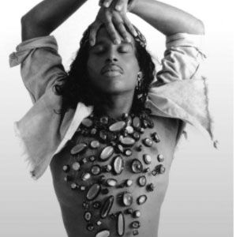
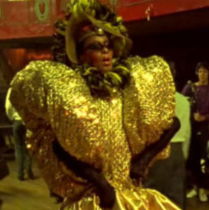
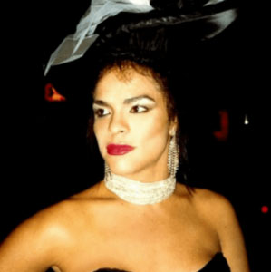

Что такое VOGUE?
Вог – стиль танцев, основывающихся на движениях, которые имитируют позы и мимику моделей из журнала Vogue.
Легенды vogue
Пэрис Дюпри
Основательница вога
Вилли Ниндзя
Дедушка и крестный отец вога
Пейпер Лабейжа
Легенда бальной субкультуры
Энджи Экстраваганса
Основатель Дома — House of Xtravaganza
Дориан Кори
Основательница и мать собственного Дома House of Corey
ВОГ И ПОП-КУЛЬТУРА
На излете 1980-х вог приметила Мадонна. 20 марта 1990 года она выпустила сингл Vogue, названный не в честь журнала, а в честь танца. Даже спустя 30 лет он остается популярным: например, в 2012 году Мадонна включила его в концертную программу MDNA World Tour. Вскоре после сингла вышел и одноименный видеоклип, режиссером которого стал Дэвид Финчер. С выходом сингла Vogue и фильма «Париж в огне» балы начали превращаться в мейнстрим. Бальную эстетику использовала Деми Ловато в видео на песню Don’t Go Breaking My Heart, к ней же обращалась и FKA Twigs в клипе Glass & Patron. Хит Мадонны в 2008 году перепела Рианна (после чего ее немедленно обвинили в присвоении чужой культуры), а за два года до этого досталось Бейонсе: в интервью The Independent королева Би призналась, как ее вдохновляли «дрэг-Дома по всей Америке, незамеченная часть американской культуры».
Фильмы о воге
Kiki (2016)
Paris is Burning (1990)
Strike a Pose (2016)

Port Authority (2019)
My House (2018)
Вог и мода
Провести грань между вогом, балами и эстетикой дрэга на модных подиумах и съемках довольно трудно. Например, прошлогодний осенний показ Opening Ceremony стал трибьютом дрэг-дивам. Креативные директора марки позвали пройтись по подиуму целый сонм участниц RuPaul’s Drag Race, а через месяц объявили о коллаборации с Сашей Велюр — победительницей девятого сезона дрэг-конкурса. Примерно в это же время в Лондоне Gareth Pugh устраивает собственный бал в память о британском стилисте Джуди Блейм, скончавшемся в феврале. Блейм был проводником квир-эстетики в моде с начала 1980-х годов, и Пью был одним из его друзей. «Мы хотели, чтобы бал был похож на анархическую мессу», — рассказывает он в беседе с Dazed. Бренд уличной одежды Hood by Air, основанный бывшим танцором Шейном Оливером, тоже последовательно поддерживает субкультуру: The New York Times считает, что его показы с элементами вога повлияли и на Риккардо Тиши, и на Александра Вэнга.